准备食材
鱿鱼、虾仁、猪颈肉、彩椒、荷兰豆、姜、蒜、葱、米酒 / 料酒、蚝油、淀粉、盐、油。
- 鱿鱼改花刀、虾仁开背、猪颈肉切片；
- 菜椒改刀，切小片、三角块；
- 姜、蒜切片；
- 腌制肉、虾仁： 添加少许蚝油、盐、淀粉，抓拌均匀；添加少许油，封油。
- 准备酱汁： 少许蚝油、白糖、盐、生抽、胡椒粉、淀粉、水
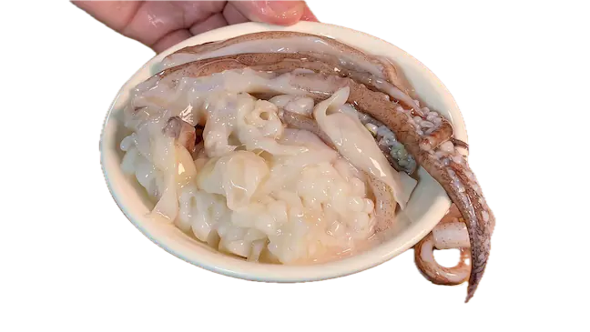
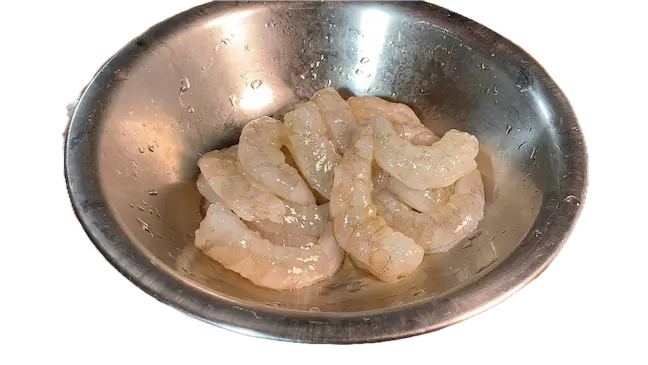
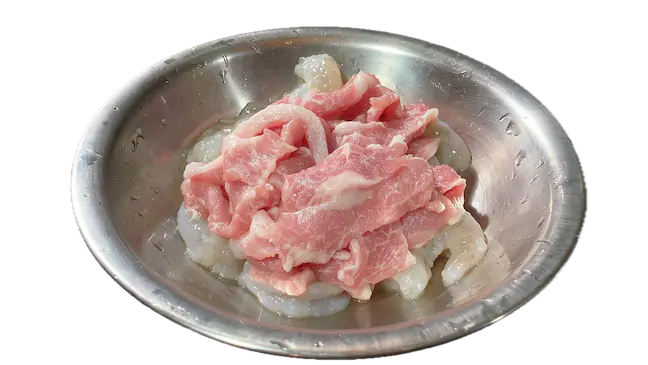
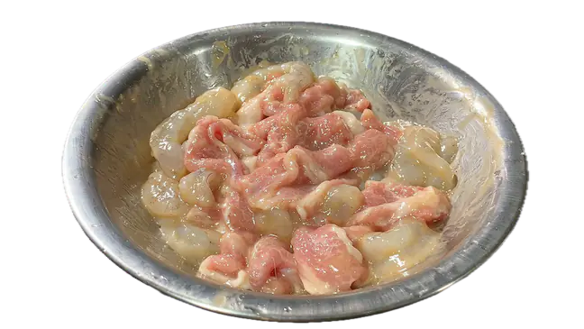
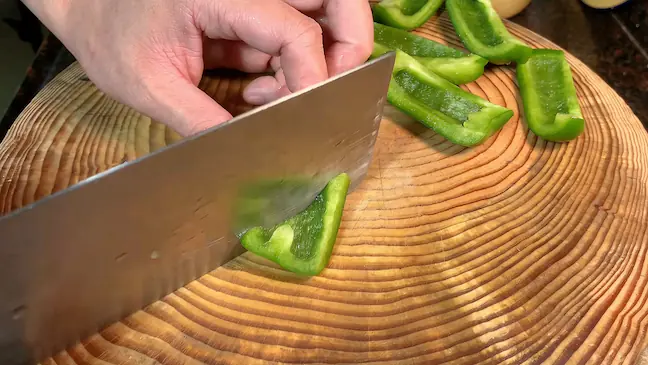
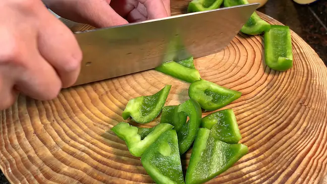
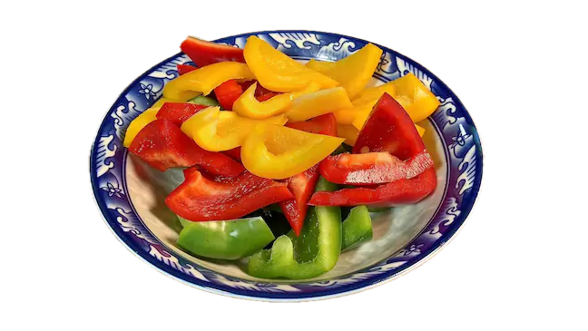
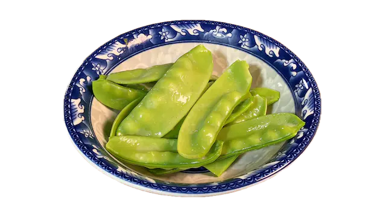
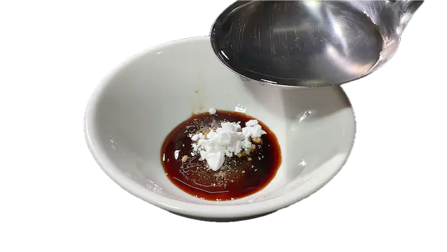
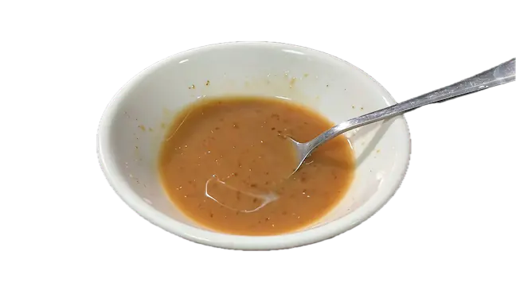
烹饪
- 起锅烧水，添加少量盐、油，开大火，水烧开后，放入彩椒、荷兰豆，煮成翠绿色就可以了，大概10秒，捞出备用；
- 趁着水烧开，沸腾，放入鱿鱼，烫到卷起来的时候，捞出来备用；
- 重新起锅热油，煎肉片、虾仁，开中火，煎到微微金黄焦香；
- 加入姜、葱、蒜炒香；
- 转大火，沿着锅边淋入少许 米酒 / 料酒，去腥增香；
- 倒入彩椒、荷兰豆、鱿鱼，翻炒均匀；
- 倒入酱汁，快速翻炒均匀；
- 添加少量油，翻炒几下，出锅。
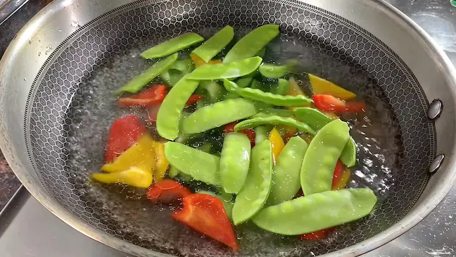
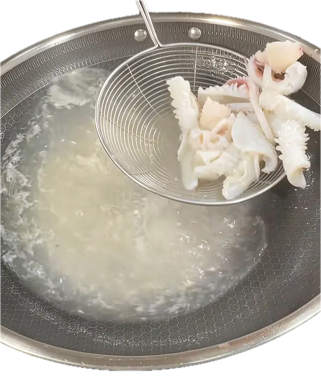
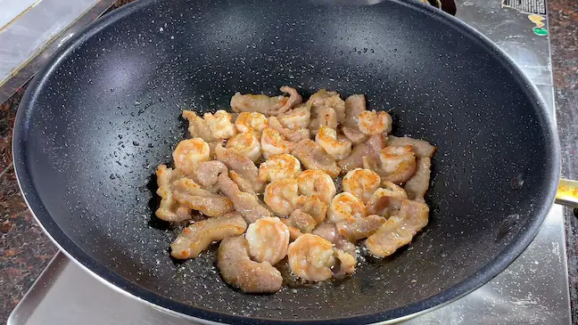
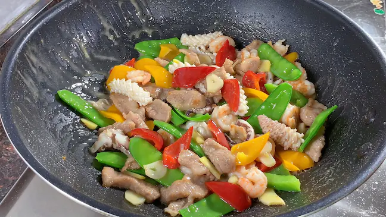
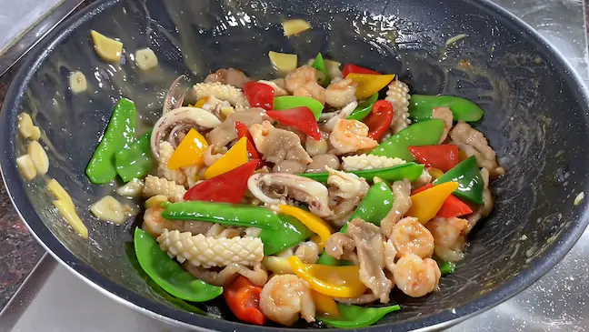